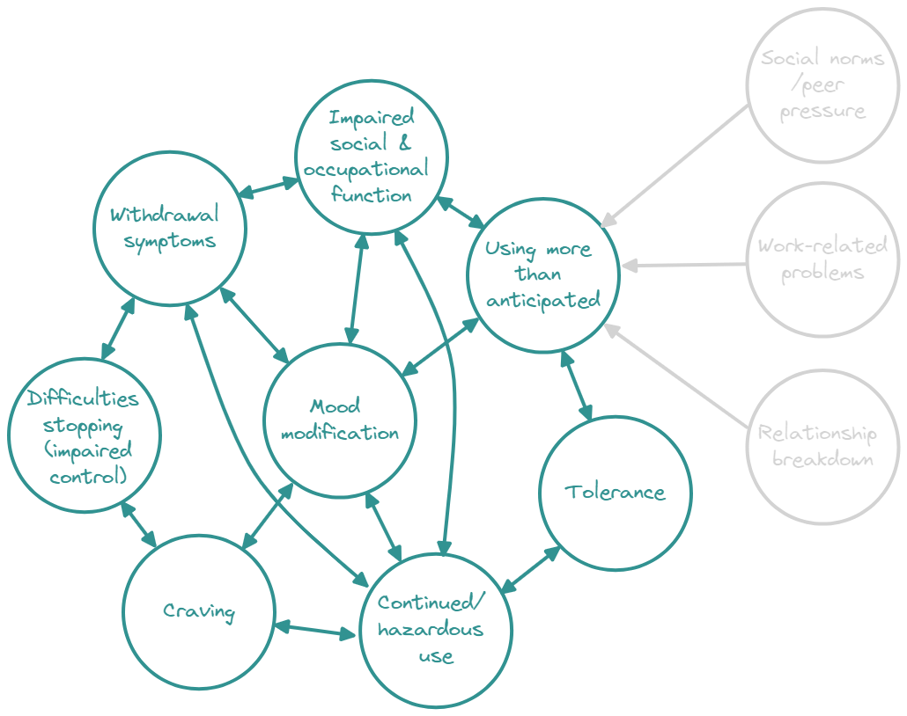

Tanning, Instagram, flying: Where do we draw the line?
In Part 1 of this post I introduced some of the most common ways in which addiction has been defined, including the definitions offered by diagnostic manuals like the Diagnostic Statistical Manual (DSM), the Components Model of addiction, Kardefelt-Winther et al. ’s (2017) operational definition of behavioural addictions, and the five common elements of addiction identified by Sussman and Sussman (2011).
In this second part, I cover some remaining approaches to defining addiction, including what people who experience addiction have to say, before considering where to draw the line between being enthusiastically involved in an activity (e.g., gaming) and being addicted to it. At the end, I come to a provisional definition of addiction that incorporates features from all of the different definitional approaches discussed.
Syndrome Model of Addiction (Shaffer et al., 2004)
Shaffer and colleagues (2004) have proposed a Syndrome Model of Addiction which highlights the similarities between addictive disorders and attempts to move the focus away from discussing “addictive activities” and towards a conceptualisation wherein addiction refers to a common syndrome with many possible foci (e.g., gambling, drugs, shopping):
Addiction should be understood as a syndrome with multiple opportunistic expressions (e.g., substance use disorders and pathological gambling)… A syndrome is a cluster of symptoms and signs related to an abnormal underlying condition; not all symptoms or signs are present in every expression of the syndrome, and some manifestations of a syndrome have unique signs and symptoms.
The similarities between addictive disorders, according to the authors, include antecedents (genetic or social risks), premorbid addiction states (repeated engagement with behaviour, desirable subjective shifts), and symptoms, including biological (withdrawal, tolerance, neuroanatomical changes), psychological (co-morbid psychological disorders), and social (criminality, delinquency, social separation) “clusters”. Undoubtedly, this is a useful approach for considering the broader context within which addiction sits and the similarities between addictive disorders.
Network approaches
A more modern approach to thinking about addictive disorders (and mental health disorders more broadly) is via network theory. Proponents of the network theory of mental disorders highlight a key distinction between diseases and mental disorders. Diseases have a clear aetiology (cause)—a heart attack, for instance, is caused by an identifiable and observable “thing”: a blocked coronary artery—whereas mental disorders refer to a constellation of recognised symptoms that appear together, but often without any clear and consistently demonstrated aetiology (Borsboom, 2017).
The hypothesis underlying network theory is that mental disorders cannot be tied to a single underlying cause because there is none. Rather, psychiatric symptoms (e.g., craving, mood modification) exist within an interacting network and cause each other to arise, persist, or abate, (Borsboom, 2017) while also being influenced by external life events (e.g., divorce, death).
In the case of addiction, a network of symptoms could be endlessly interconnected, with “feedback loops” (Borsboom, 2017) that result in people spiralling further and further into an addiction with increasingly severe symptoms. For example, work-related stress may result in drinking more alcohol than planned, which could lead to relief from stress and anxiety (mood modification), which subsequently leads to preoccupation with alcohol or increasing salience of the activity, which results in drinking more than expected again, and later leads to prioritising alcohol use over other activities, leading to great stress and anxiety as functioning in other areas of life declines, and so on and so on...

Symptoms in psychopathology networks are characterised by their degree of connectiveness with other symptoms in the network (known as “centrality”) and the strength of these connections, or the degree of correlation between them (Fried et al., 2017). Studying addictive disorders through “network models” that explore the mutual interactions between symptoms can help us identify symptoms with high centrality and the connections between symptoms.
Only one study (that I could find) has done this to date. Rhemtulla et al. (2016) used network models to explore the interconnectivity of symptoms in 2,405 Americans who had used one or more substance (cannabis, cocaine, sedatives, stimulants, opioids, and/or hallucinogens).
The authors found the symptom with the highest centrality across all substances was use longer than planned, which was strongly correlated with withdrawal and tolerance. Using more than planned could be said to represent a level of impaired control over the behaviour, as the authors explicitly suggested. However, the symptom they studied that’s more closely aligned with “impaired control” in the sense that it has been discussed here was “an inability to stop”, which actually showed relatively low centrality. Still, an inability to stop showed some moderate–strong correlations with other symptoms for certain drugs, including using more than anticipated and hazardous use, suggesting it may play an influential role in maintaining substance use.
Rhemtulla and colleagues’ findings provide an interesting insight into the connections between symptoms associated with substance use; however, their application to defining addiction is limited as it’s likely that most participants in their analyses weren’t actually addicted to the substances in question1. To be included in their study, individuals only had to have used one of the substances at least 6 times. These were then divided into three groups: (1) >6 lifetime use with no abuse criteria endorsed (38.3% of the entire sample), (2) >6 lifetime uses with ≥1 abuse criteria endorsed (19.1%), and (3) 11 uses within one month at some point (42.7%). More research on network approaches to understanding addictive disorders is needed.
What do people who experience addiction say?
How about actually asking people with lived experience of addiction? Tellingly, this question seems almost unacademic!
Walters and Gilbert explored this question in 2000. They surveyed 31 men with a history or drug and/or alcohol misuse who were inmates enrolled in a drug education program, along with 20 fellows of the Division on Addictions in the US. Both groups were simply asked to write their own definition of addiction and the authors then picked out the signs or symptoms described.
In their definitions, inmates most commonly referred to diminished control (35%), need for survival (16.1%), urge or craving (16.1%), immediate gratification (12.9%), preoccupation (12.9%), and psychological dependence (12.9%); only 3.2% referenced physical dependence!
The addiction experts, by contrast, most frequently referred to physical dependence (50%), diminished control (45%), compulsion (40%), persistence (35%), preoccupation (35%). Unsurprisingly, they used significantly more words to define addiction, and also expressed dissatisfaction with the concept of addiction being applied to non-drug activities (e.g., gambling).
Experts placed greater importance on physical dependence, persistence, and compulsion than inmates. Interestingly, there wasn’t that much agreement within the two groups. Only 3.2 to 35.5% of those with lived experience of addiction referred to the same symptom, while experts agreed on 5 to 50% of symptoms. Still, overall, both groups emphasised diminished control as a defining feature, consistent with several other approaches discussed here.
I found just one more study that provides some insight from those with lived experience by Hammer et al. (2012). They interviewed 63 people with opioid, alcohol, or nicotine addictions with the aim of exploring how people view their addiction. Some common themes reported by those interviewed included periods of “normality” followed by relapse; use of substances to cope with high stress, anxiety and/or depression; physical withdrawal symptoms like cravings; and “losing everything” as a result of the addiction2.
The expansion of behavioural addictions: Where do we draw the line?
I started these posts by referring to the rapidly expanding application of the term addiction — Instagram addiction, dancing addiction and so on. Although little empirical evidence can be adduced to support the validity of the more bizarre of these “addictions” (Perales et al., 2020), the once-doubted notion that someone can be addicted to something that isn’t a drug is now well accepted.

Research on the more accepted forms of behavioural addiction—namely gambling and video gaming disorders—has identified multiple similarities between those with drug and behavioural addictions, including in phenomenology (first-person experience), symptomology, underlying neurological mechanisms, and genetic predispositions (for introductions to this literature, see: Grant et al., 2010 & Leeman & Potenza, 2013).
But simply doing something a lot does not qualify as an addiction, so how can we tell the difference between someone who is enthusiastic or passionate about activities like gaming or extreme sports and someone with a behavioural addiction? Between high-involvement and pathological involvement, to co-opt the terminology used by Billieux et al. (2019)?
Concerns surrounding this distinction are burgeoning with the recent edition of Gaming Disorder to the ICD-11. Several expert groups have warned that the criteria for the disorder could quite easily pathologize avid gamers and start a “moral panic” founded on overexaggerated fears of video gaming harm (Aarseth et al., 2017; Bean et al., 2017; Billieux et al., 2019; van Rooij et al., 2018).
Griffiths (2005) has proposed that healthy enthusiasm and addiction can be differentiated by simply asking: does the behaviour add to (healthy enthusiasm) or take away from (addiction) one’s life? This is consistent with the “continuation despite negative consequences” feature that has appeared so frequently in these posts.
Perales et al. (2020) have argued that the “signature of addiction is the increasing role that compulsivity plays in the activity that one becomes addicted to”. That is, those with addictions feel compelled to engage in the behaviour. That they have to even if they are well-aware that this will bring negative consequences.
Most recently, Brand and colleagues 2022 have proffered a method for determining which conditions should be considered addictive disorders in the ICD-11 alongside gaming disorder. According to their flowchart-guided process, the first thing we should ask when determining whether something like excessive shopping represents an addiction is “Does evidence exist for functional impairment in everyday life?” We can then ask whether the behavioural pattern resembles or is explained by theories of addiction, and finally if there is sufficient high-quality evidence of the symptoms of addiction to support the classification. If the answer to any of these three questions is “no”, then we can’t call it an addiction.
Two key symptoms?
The various approaches to defining addiction outlined in these posts all seem to point towards two symptoms: continued engagement with the activity despite negative effects on social, occupational, or psychological functioning and impaired control over the behaviour3.
This makes sense—if the “addiction” results in no harmful or impairing effects on the person’s life, or even has positive effects, can it be an addiction in the same sense as someone whose entire family life and career fall apart as a result of excessive gambling? Similarly, if someone can easily give up a behaviour, can they be addicted to it?
But does someone have to display these signs to be “addicted”? If a person presents with the other key signs of addictions—say, cravings, prioritising the activity above others, substantial time spent engaging with the activity, tolerance, and withdrawal—but not continuation despite negative consequences and impaired control, are they addicted? Perhaps not. An avid sportsman could meet all of those criteria to some degree.
It’s for this reason that I would contend that continued engagement with the activity despite negative consequences and impaired control are the cardinal symptom of addiction. Still, these alone may not define addiction—they are necessary but not sufficient4.
Final thoughts
I have chosen to focus mostly on symptom-based approaches here, but the question of what addiction is could be approached by looking at the (neuro)psychological processes (e.g., compulsivity, response inhibition, reward valuation & learning; Yücel et al., 2019) and characteristics (e.g., emotional & executive dysregulation; Perales et al., 2020) associated with the state, or by exploring the underlying neurobiology, including risk factors and changes that occur with excessive engagement in a behaviour (Van Bockstaele, 2012). Efforts to understand these phenomena will no doubt benefit our understanding of addictive disorders and their treatment, but addictions are recognised by clinicians (and understood by most people) on the basis of their outward characteristics, making them a useful candidate for answering the question that heads this post.
Something else I haven’t touched on is the temporal nature of addiction symptoms. That is, individuals are likely to experience different symptoms at different times throughout the course of their addiction (Shaffer et al., 2004). For example, in the early stages of addiction a person may experience cravings and tolerance, but little in the way of withdrawal symptoms, negative functional consequences, and relapse (by the very fact they have not attempted to abstain).
So, what does it mean to be addicted? This is a contentious subject (as I’m sure you’ve gathered by now). No single definitional approach discussed here is inerrant, incontrovertible, but each provides a useful contribution and there are clear commonalities.
Considering them all together, a logical (but still fallible) definition might be:
A person with an addictive disorder repeatedly engages with a behaviour (e.g., alcohol use) even after this severely and negatively affects their social, occupational and/or psychological functioning. They show reduced control over the behaviour and will likely experience strong cravings or urges to engage with it. The presence of tolerance, withdrawal symptoms, preoccupation, and mood modification are also common. These symptoms or processes may interact with each other to sustain or augment addiction and beget new symptoms (e.g., impaired control could precipitate hazardous use and lead to tolerance). Not all symptoms are present in every expression of addiction, and some addictive disorders have unique symptoms (e.g., loss chasing & financial problems in gambling addiction).
Last updated: 01/07/2023
References
Acknowledgements
I owe thanks to Drs Dylan Pickering and Debi LaPlante for their helpful comments and suggestions for this post.
Cover photo credits: - Top left: Photo by Alexander Andrews on Unsplash
Top right: Photo by Sven Mieke on Unsplash
Bottom left: Photo by Courtney Clayton on Unsplash
Bottom right: Photo by Jacek Dylag on Unsplash
Footnotes
This is not a criticism of Rhemtulla et al. (2016). Their study was rigorous, and represents an important step in advancing our understanding of substance use and addiction.↩︎
The experiences of those with addiction reported in study are much more nuanced than I describe here and the authors discuss how their reports relate to common frameworks for addiction (e.g., the biological model), and so I recommend people read the full article.↩︎
Obviously, the severity of these symptoms must be considered. Many of us drink alcohol or do other things at a level we would not consider extreme, but that can still lead to mild social and/or occupational problems, and yet continue to do so. Similarly, repeated but unsuccessful attempts to stop eating junk food or to start exercising more are characteristic of most of us—are we demonstrating a level of impaired control in the same way? Addictions are characterised by disruptive and destructive patterns of behaviour that exceed the relatively inconsequential mistakes and foibles of most.↩︎
Impaired control could be a candidate symptom for defining addiction on its own (the medical expression would be that the symptom is “pathognomonic of addiction”). However, as cogently argued by Walters and Gilbert (2010): “To expect any one criterion to capture the complexity and richness of the addiction concept is unrealistic”.↩︎
Citation
@online{heirene2020,
author = {Heirene, Rob},
title = {What Does It Mean to Be “Addicted?” {(Part} 2)},
date = {2020-04-15},
url = {https://robheirene.netlify.app/posts/2020-what-is-an-addiction-pt2},
langid = {en}
}